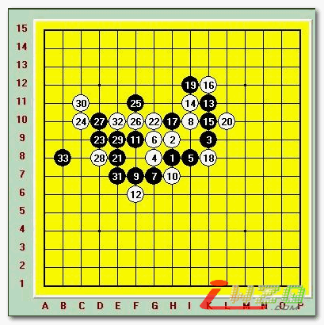
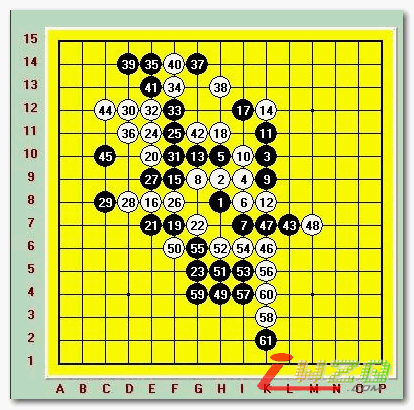
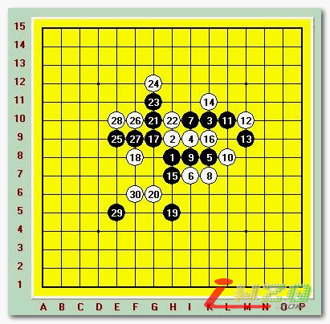
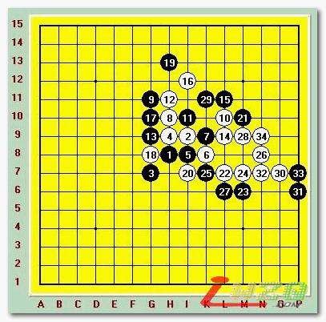

京津对抗赛李非对局节选
#1 京津对抗赛李非对局节选 作者：有志青年 发表时间：2007-5-7 14:37:44
4月8号京津对抗赛在天津基督教青年会落下帷幕。全部以天津本地棋手出战的天津队不出意料的输掉了比赛。但天津二台李非出色的表现再次充分证明了她亚洲第一女棋手的实力。下面我们来看看她的几盘对局。
第一轮 残月 黑胜 黑：李非 白：曹东

曹东开局开出残月说明了他的目的。因为女子棋手天生在攻击力上难以和男子棋手比肩。虽然李非实力出色。但在这次比赛前也从未战胜过国内高段男子棋手。曹东开残月一方面他本人对残月研究深厚。另一方面期待李非在进攻中出现漏洞。到时候白棋先手曹东还是很舒服的。可惜曹东错误的估计了李非的攻击能力，也高估了自己的防守能力。双方定式进行到11手。12手是曹东研究过的手段。正常定式的12手目前的研究进展已经证明黑棋必胜。所以曹东先行变招走出完全受虐的12手。13正常也是针对这个12的必胜走法。14？曹东的目的是想把局面搅乱。15-19漂亮的交换次序。白棋彻底进入被动防守。21！VERY GOOD~黑棋拉开总攻的序幕。22这手似乎偏软。错误的估计了黑棋在左边的潜力。23.25黑必胜形。以下曹东再无反抗的能力。只能接受成为第一个国内输给女子棋手的高段棋手。这盘黑下的近乎完美，利用先手完全没有给曹东任何的机会。
第二轮 梳星 黑胜 黑：李非 白：陈伟

李非开局开出梳星说明她在战胜曹东后已经产生了极大的信心。黑5李非走出不常见变化。虽然结论是白优，但如果没有深入研究的话很难走出正确的次序。白6说明陈伟对这个变化并不熟悉。以下正常交换到16黑抢回先手。但黑想轻易做出必胜难度很大。17侵消了白上面的势力。19开始了全盘控制。20是很有想法的一手棋，白在上方潜在大量的进攻材料。23手是很有想法的一手棋，白在上面直接进攻的话黑在下面可以利用活三做VCF取胜。以下白的攻击非常小心。但是这种程度的攻击很难把以擅长防守出名的李非攻死。37.39.41连续三手交换后43非常具有大局观的一手棋。白在左上的势力不足以成杀。而43把右边和下面的黑子联系了起来。46无奈防守后49李非再次走出强手。局面彻底打开了以下白难防。52最强防之后53黑棋开始发力。不过现在黑取胜还早了一些。可惜白棋因为攻击不果心理应该出现了问题。这里防的并不仔细。56方向错。黑简单胜。李非再次证明了她有足够的实力战胜国内高段棋手。

李非再次开出梳星开局，向国内号称防守最强的吴昊发起冲击。这盘的棋谱后面由于棋手进入读秒下的很凌乱。只能复盘到30了。不过通过棋谱我们体会到黑棋那种步步压迫的压力。29其实黑已经必胜了。可惜面对吴昊无奈的30，李非这里走的过于自信了。仔细一点的话不难发现正确的取胜次序。最后因为VCT失败消耗的时间过多最后超时惜败于吴昊。

云飞开局下出斜月，李非明显对斜月的变化并不了解。走出三打期待进入中盘。白8的下法虽然是黑好。但后面白骗招非常多。黑9？李非对三打了解的太少。错误的黑9。以下白必胜。云飞没有给李非任何的机会干脆的拿下了这盘。证明了他已经超越了一些老棋手的实力。
这次比赛虽然李非个人发挥出色。可惜天津队整体实力和北京确实存在差距。最后输掉了京津对抗赛。
#2 Re:京津对抗赛李非对局节选 作者：江南新绿 发表时间：2007-5-7 15:50:58
第一第三轮的确下的好，但第二轮和第四轮就下的不怎么样。很值得怀疑第四轮云飞下那个14。
#3 Re:京津对抗赛李非对局节选 作者：小丸.net 发表时间：2007-5-7 22:45:49
大哥，以后发谱能不能发上相应的SGF、POS,LIB文件或者五子妙手的字符串，方便大家一边打谱一边看评论